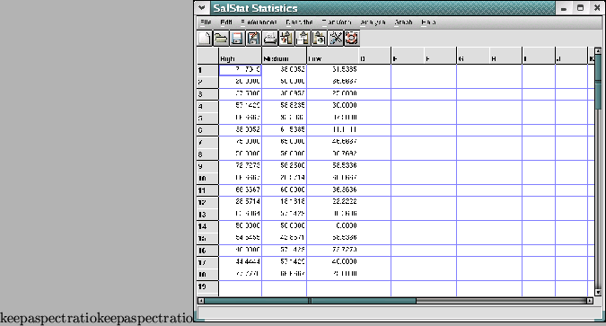
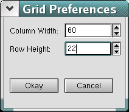
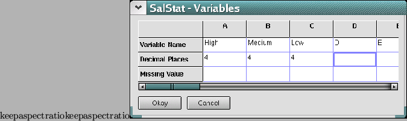
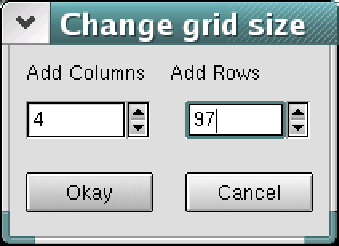

When SalStat is running, you will see 2 different windows on your screen. One has a grid like pattern on it, and the other is mostly blank. Both have menus.
The data grid, where you can enter data
The window with the grid on is where you can enter your data. It works like a spreadsheet (although there are no functions available currently). Each cell contains a single datum, and you can actually input anything you want - either a number or a string of letters. The grid will be called the data grid from now on. The window with the blank sheet is called the output sheet - once you have done some data analysis, this is where your results will appear.
Most popular statistics packages demand that (for between subjects designs at least) the data are entered in a particular way. SalStat has been designed to be intuitive, and differs in that each condition is entered into its own column. In other words, if you have an experiment with one variable that has 3 levels (say, amount of alcohol - 2 units, 4 units or 6 units), then you will need to enter your data into three columns: one column for each condition.
The data grid can be customised to your liking. If you find the cells too large or small they can easily be changed: if you go to the menu, click on ``Preferences'' -> `Change Cell Size...''.

Changing the cell size on the grid
A small dialog box will come up that has 2 buttons on the bottom (marked ``okay'' and ``cancel''), and a couple of what are called ``spin controls''. Next to the box with a number in it are 2 small arrows pointing up and down. Click on these to change the values. The top box number refers to how wide the columns are, and the lower box is how high the rows are. Try changing the values of both, then click on ``okay'', and you will see that the data grid has changed all of the cells sizes. If you only want to change the size of one column or row, put the mouse point over the line next to the column or row you want to change. You will see that the mouse cursor changes from the normal arrow into a line with an arrow at each end. This means you can press the left button and drag the line (with the button held down) to where you want.
As each column in SalStat refers to a different condition, each column heading can also be changed: These may be referred to as variable names. Of course, you can keep the default headings of A, B, C and so on, but it may be easier when you read your results to have headings more meaningful to yourself. Using the above example of 3 levels of alcohol, you could use headings of ``2 units'', ``4 units'', and ``6 units''. To change the headings, just go to the menu, click on ``Preferences'' -> ``Variables...''.

Making variable names
A new window will appear, and in this there is another grid, but this time smaller. Here, you can put in whatever variable names you want into the top row. If you have missing data (data where you were not able to collect a value), you can also enter what you want your missing data to be. By default, the value is -99.999, but if you have some real data of this value, you would want to change the missing value to something more suitable.
If you have some data saved on disk, it can be loaded. Currently, SalStat only loads ASCII data - this means simply plain text, and with no variable names. This is done by going to the menu and clicking on ``menu -> open...'', and a standard dialog will appear allowing you to select the file you want to load. If your data are too big for the grid, don't worry because SalStat will automatically adjust its size to fit the data.
Saving data is done the same way. From the menu, click on ``File -> Save As...'', and you will get a dialog where you can enter the file name.
If you need to add an extra column or row to the grid, go to the menu, click on ``edit'' -> ``Add Columns and Rows...'', and a dialog will appear where you can enter the number of rows or columns you want to add.

Changing the size of the grid
From the same place, you can also delete rows or columns. The column or row deleted will be the one with the ``focus'' (this is the cell where you are currently entering data).